Working prototype · chemistry proven as a proof of concept
Text that shows you what it's describing.
An embeddable comprehension layer for digital reading. A reader highlights a descriptive passage — a storm system, a cardiac cycle, a reaction mechanism — and a visual appears inline. The reader stays in the text.
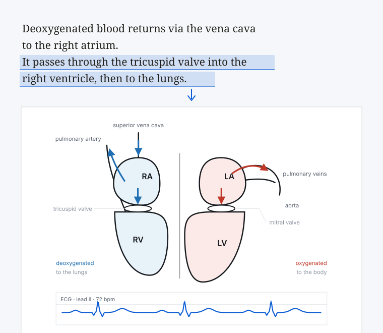
The problem
Readers already leave the page. It costs them every time.
Every reading interface in common use works at the level of the word. Dictionary lookup, highlighting, annotation, text-to-speech. None of them helps the reader who meets a passage describing something inherently visual — a depression deepening as it tracks north-east, the mechanism by which a beta-blocker interrupts a cardiac signalling cascade, the disposition of three corps across a ridge.
That reader has two options. Leave the document and search — losing their place, their momentum, and usually returning with something generic rather than something fitted to the sentence that caused the difficulty. Or read on without the understanding the passage deserved.
The information needed to produce the right visual is already in the text. What has been missing is a way to act on it in place.
It is not AI summarising books or replacing the author's voice. It is AI doing what a good diagram always did — making the world the author described visible to the reader.Colm O'Connor
Scope
Every kind of passage a reader cannot picture.
These are the kinds of descriptive content the method is built to address. Chemistry is the domain proven so far, as a proof of concept; the rest indicate where it is designed to extend.
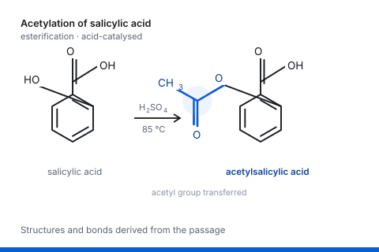
Chemical
A named compound in prose becomes a structure. This is the domain implemented deterministically.
Proof of concept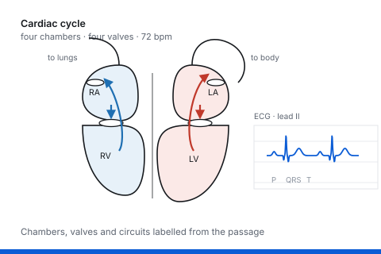
Anatomical
A paragraph traces blood through four chambers and two circuits. The schematic holds them all at once.
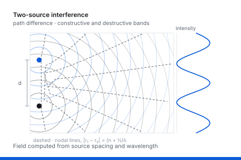
Physical
Interference is hard to picture from description alone, and immediate once drawn.
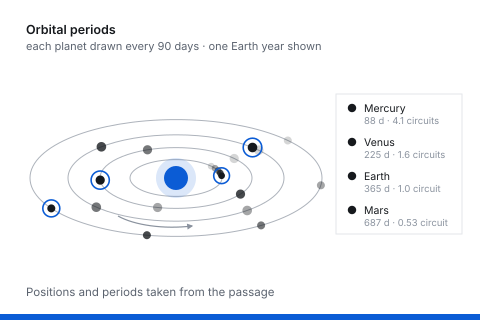
Astronomical
Mercury laps the sun four times while Mars manages half a circuit. Animated in the reader; shown here as a still.
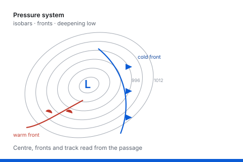
Meteorological
Synoptic terms are technical shorthand. The chart shows what the shorthand stands for.
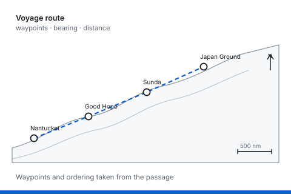
Geographical
Most readers cannot place the Sunda Strait. Plotted in sequence, the journey resolves.
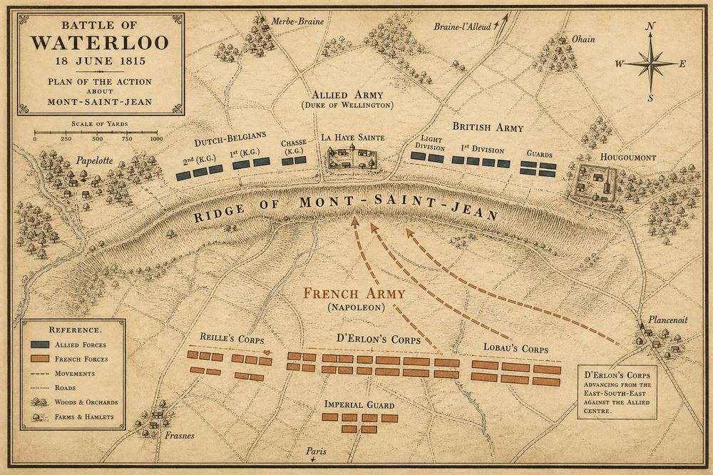
Tactical
Three sentences name eight places and four formations. The map resolves all of them at once.
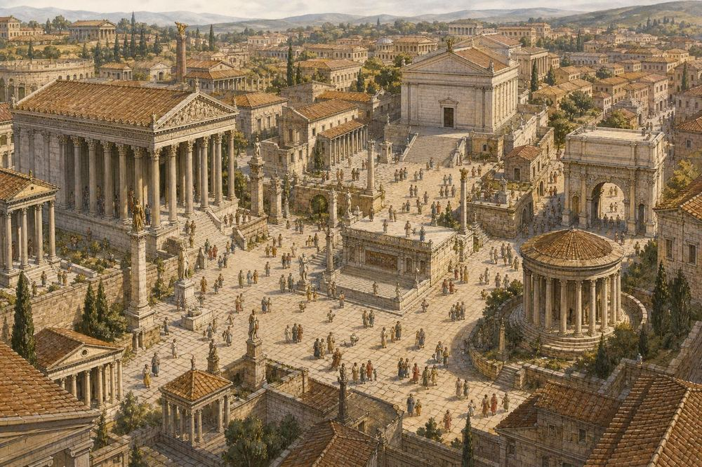
Architectural
History writing names buildings a reader has never seen. A reconstruction grounds them in relation to each other.
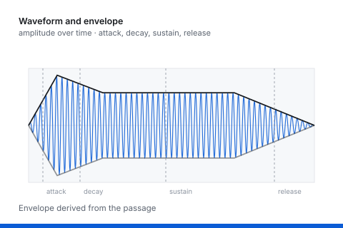
Musical
Sound described in words becomes a shape with a beginning, a middle and an end.
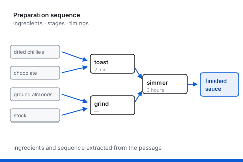
Culinary
A recipe embedded in lyrical prose, extracted as a sequence you could actually follow.
Landscape
Descriptive prose builds a scene slowly. The visual arrives with the sentence rather than after it.
Illustrative. These show the kinds of visual a reader receives. Output is not limited to still images — several of these are animated in the reading interface, where the orbits turn, the cardiac cycle beats and the storm tracks north-east, and appear here as stills. They are not produced at runtime, and only chemistry is implemented with deterministic rendering, as a proof of concept. Full status
Status
What's built, stated plainly.
There is a working prototype and a codebase. Chemistry renders deterministically, as a proof of concept rather than a production system. The other domains shown in the demo are illustrative of the method rather than implemented, and the demo's visuals are pre-generated and embedded rather than produced at runtime.
That distinction matters, so it sits on the front page rather than in a footnote. Full status
1
Domain proven deterministically — chemistry, as a proof of concept
13
Passages in the demo, each with the visual a reader would receive
0
Changes required to existing catalogue files
Evidence
What's established, and what isn't.
That well-chosen visuals alongside text improve comprehension is well supported in the literature. Whether an inline generated visual delivers that same gain is untested — by anyone, including me.
A controlled study is the next step, and a negative result would be as useful as a positive one. The evidence, in full
See it work
The demo is the argument.
Thirteen passages, each with the visual a reader would receive on highlighting it. It takes about two minutes.
Partnership
For publishers and platforms.
The work is available as a package — the demo, the codebase, a proof of concept, and the design judgment behind it. Deal shape is open: outright sale, exclusive or non-exclusive licence, field-of-use split, or a pilot.